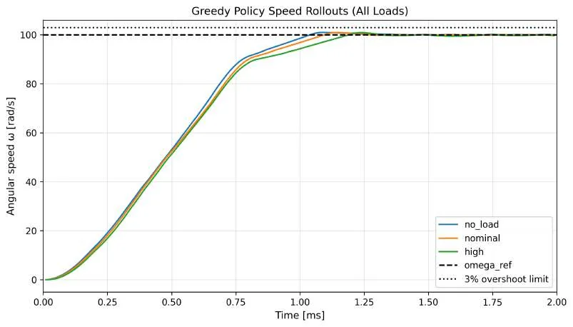
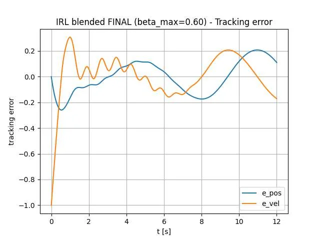

Reinforcement Learning für Regelungssysteme
Von Belohnungssignalen zu Regelaktionen unter Nebenbedingungen.

SIMULATION / REGELTRAJEKTORIENDie Herausforderung
Kann eine erlernte Regelstrategie einer Solltrajektorie genau folgen, dabei Stellgrößenbegrenzungen einhalten und auch bei veränderten Systembedingungen sinnvoll reagieren?
Der Ansatz
Wir modellierten einen Gleichstrommotor mit neun diskreten Spannungsaktionen und einem tabellarischen SARSA-Regler. Untersucht wurden sowohl lastabhängiges als auch robustes Training. In einem zweiten Projekt verglichen wir integrales Actor-Critic Reinforcement Learning mit PD-Reglern und kombinierten PD–IRL-Ansätzen.
- SARSA(0) mit diskreten Zuständen und ε-greedy Exploration
- Spannungsgrenzen und verschiedene Motorlastszenarien
- Actor-Critic-Lernen für ein simuliertes Feder-Masse-Dämpfer-System
- Vergleich mit konventioneller Proportional-Differenzial-Regelung (PD)
Das Ergebnis
Die Studienberichte dokumentieren simulierte Drehzahlverläufe und Reglervergleiche. Laut Bericht hielt die erlernte Motorregelung die festgelegten Grenzen für Anstiegszeit und Überschwingen bei drei simulierten Lasten ein. Diese Berichte stellen keinen erneuten Testlauf der aktuell veröffentlichten Skripte dar.
Ein Vergleich zwischen tabellarischem SARSA und einem Actor-Critic-Regelungsansatz.
Einblicke in das Projekt

Simulationsergebnisse sind kein Nachweis für den Einsatz an realer Motorhardware oder für die Sicherheit eines solchen Einsatzes.